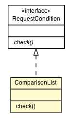

java.util.AbstractCollection<E>
java.util.AbstractList<E>
java.util.AbstractSequentialList<E>
java.util.LinkedList<Comparison>
org.vorpal.blade.framework.config.ComparisonList
java.util.AbstractCollection<E>
java.util.AbstractList<E>
java.util.AbstractSequentialList<E>
java.util.LinkedList<Comparison>
org.vorpal.blade.framework.config.ComparisonList
|
||||||||||
| PREV CLASS NEXT CLASS | FRAMES NO FRAMES | |||||||||
| SUMMARY: NESTED | FIELD | CONSTR | METHOD | DETAIL: FIELD | CONSTR | METHOD | |||||||||

java.lang.Object
public class ComparisonList
| Field Summary |
|---|
| Fields inherited from class java.util.AbstractList |
|---|
modCount |
| Constructor Summary | |
|---|---|
ComparisonList()
|
|
| Method Summary | |
|---|---|
boolean |
check(String id,
String headerName,
SipServletRequest request)
|
| Methods inherited from class java.util.LinkedList |
|---|
add, add, addAll, addAll, addFirst, addLast, clear, clone, contains, descendingIterator, element, get, getFirst, getLast, indexOf, lastIndexOf, listIterator, offer, offerFirst, offerLast, peek, peekFirst, peekLast, poll, pollFirst, pollLast, pop, push, remove, remove, remove, removeFirst, removeFirstOccurrence, removeLast, removeLastOccurrence, set, size, spliterator, toArray, toArray |
| Methods inherited from class java.util.AbstractSequentialList |
|---|
iterator |
| Methods inherited from class java.util.AbstractList |
|---|
equals, hashCode, listIterator, removeRange, subList |
| Methods inherited from class java.util.AbstractCollection |
|---|
containsAll, isEmpty, removeAll, retainAll, toString |
| Methods inherited from class java.lang.Object |
|---|
finalize, getClass, notify, notifyAll, wait, wait, wait |
| Methods inherited from interface java.util.List |
|---|
containsAll, equals, hashCode, isEmpty, iterator, listIterator, removeAll, replaceAll, retainAll, sort, subList |
| Methods inherited from interface java.util.Deque |
|---|
iterator |
| Methods inherited from interface java.util.Collection |
|---|
parallelStream, removeIf, stream |
| Methods inherited from interface java.lang.Iterable |
|---|
forEach |
| Constructor Detail |
|---|
public ComparisonList()
| Method Detail |
|---|
public boolean check(String id,
String headerName,
SipServletRequest request)
throws ServletParseException
check in interface RequestConditionServletParseException
|
||||||||||
| PREV CLASS NEXT CLASS | FRAMES NO FRAMES | |||||||||
| SUMMARY: NESTED | FIELD | CONSTR | METHOD | DETAIL: FIELD | CONSTR | METHOD | |||||||||